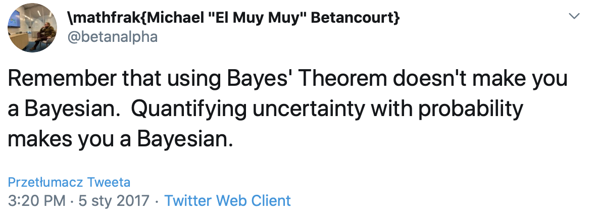

Data analytics
Zawartość
Data analytics¶
Organizational aspects¶
C3 214,
Final grade: 50% exam, 50% laboratories/project. Passing of laboratories required for attempting exam.
Exam in oral form (list of topics will be available)
Course materials, including lecture slides are available on Github, if you see something wrong - make an issue.
Course outline¶
Introduction to Statistical Modeling
General concepts of Bayesian paradigm
Monte Carlo computation
Simple models and uncertanity
Bayesian workflow
Causality in models
Hierarchical and multilevel models
Model checking
Modeling of missing data
Source material - BDA 3rd edition¶
Andrew Gelman et. Al

Examples in R but easily transferable.
Great lectures by Prof. Aki Vehtari from Alto University link
Source material - Statistical Rethinking 2nd edition¶
Richard McElreath

Probably the best source for self learning of Bayesian methods
More code oriented, also in R, lots of additional resources, including Youtube lectures available here
Source material - case studies by Michael Betancourt¶
Available here
More advanced, but at the same time cutting edge
Some content (most recent and podcasts) is available only for patrons
Extra reading - Student’s guide to Bayesian statistics¶
Ben Lambert

Second “modern” book on Bayesian statistics
Extra reading - Bayesian analysis with Python¶
Osvaldo Martin

Actually only book based on Python, with focus on PyMC3. You need to know what you are doing. Risky choice for first contact.
Interesting people on Twitter¶
Prof Aki Vehtari @avehtari
Prof. Andrew Gelman @StatModeling - also has an interesting blog
Michael Betancourt @betanalpha
Richard McElreath @rlmcelreath
Alex Andorra @alex_andorra - podcast on Bayesian statisticsa
there will be a twitter list available on Github
What is the point?¶
We are focusing on Bayesian Data Analysis and statistical modelling
Models grounded in probability
As interpretable as possible
Maximally transparent
What is data science?¶

Work of data scientist intertwines both machine learning and statistical modelling and multiple other fields
SM vs ML¶
Statistical modelling and machine learning are closely related fields, often hard to distinguish
They should not be directly compared because those comparisons are usually unfair to one or another, as they are for different problems
SM¶
Incorporates probability
Considers data generation
Looks for interpretability
Usually regression based
Not limited to linear
ML¶
No initial structure nor traditional parameters
No focus on single variable
Does not model the process but learns from data
Does not rely on additivity
Advantages of ML¶
ML is the best in high Signal/Noise ratios
Especially visual and sound recognition, language translation
More of a black box approach
Large datasets with multiple number of features
Advantages of SM¶
Handles small datasets better
Provides uncertainty estimates
Transparent
Allows investigation of influence of predictors
Discussion points¶
ML might need more data for the same problem as SM
SM needs interactions to be specified, while ML can determine them more freely
ML usually is a better classifier/predictor but uncertanity is not handled that well
ML has much more vocal advocates
SM requires data reduction for larger datasets
When to use SM?¶
Uncertainty is important or Signal/Noise ratio is small
Not perfect training data
Isolation of particular variables effects
Additivity
Smaller samples
Interpretability
When to use ML?¶
Signal/noise ratio is large and little randomness
Relatively unlimited training data
Overall prediction is important
Uncertanity is not
Expected substantial nonlinearity
Huge samples
Black box is acceptable
Bayesian Statistical Modelling¶
Three essential steps:
Set up full probability model
Condition on the observed data
Check and evaluate model and its posterior distribution (repeat if necessary)
Bayesian paradigm¶
Bayesian statistics differs in two main points with frequentist statistics:
Data is fixed, parameters are uncertain
Prior knowledge is inconporated in inference
Everything has a probability distribution
Bayesian methods work¶
Sharon Bertsch McGrayne

Available e.g. on Audible (1st month free) History of use of Bayesian statistics
Main fields of Bayesian applications¶
Social sciences
Medicine and biology
Experimental sciences
Diagnositics
Decision support
Main concepts of BDA¶
Observables and unobservables
Parameters \(\theta\), data \(y\) and predictions \(\hat{y}\)
Observational units and variables
Exchangeability
Explanatory variables (predictors)
Hierarchical modelling
Utility distributions
Bayes’ rule derivation¶
It all starts with joint probability
With relatively basic transformations
where
Bayes’ rule¶
In most applicatations we focus on the numerator

Example – spelling correction (BDA3)¶
Probability of writing ‘radom’ instead of ‘random’
Simplifying assumptions – only 3 candidates \(\theta_1=\mathrm{'random'}\), \(\theta_2=\mathrm{'radon'}\) and \(\theta_3=\mathrm{'radom'}\)
Example cont.¶
Data comes from Google spellcheck model
Prior distribution¶
\(\theta\) |
\(p(\theta)\) |
|---|---|
random |
\(7.60\ \times\ 10^{−5}\) |
radon |
\(6.05\ \times\ 10^{−6}\) |
radom |
\(3.12\ \times\ 10^{−7}\) |
Example cont.¶
Likelyhood¶
\(\theta\) |
\(p(\mathrm{radom}\vert\theta)\) |
|---|---|
random |
0.00193 |
radon |
0.000143000 |
radom |
0.975 |
Example cont.¶
Posterior distribution
\(\theta\) |
\(p(\theta)p(\mathrm{'radom'}\vert\theta)\) |
\(p(\theta\vert\mathrm{'radom'})\) |
|---|---|---|
random |
\(1.47\ \times\ 10^{−7}\) |
\(0.325000000\) |
radon |
\(8.65\ \times\ 10^{−10}\) |
\(0.002000000\) |
radom |
\(3.04\ \times\ 10^{−7}\) |
\(0.673000000\) |